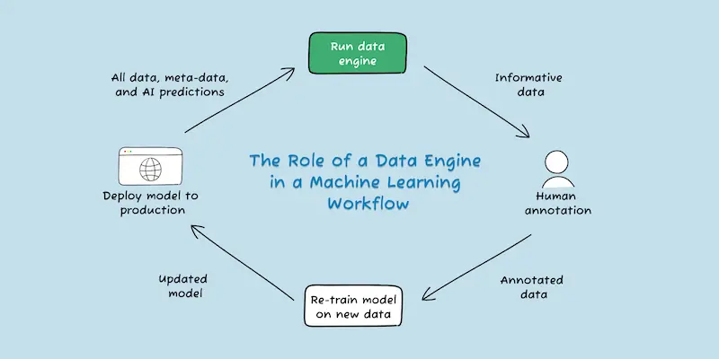

As more vehicle owners adopt Tesla's Fully Self-Driving1 (FSD) software, the company is leveraging an increasingly large collection of data from its vehicle fleet2 to create a safer and more effective self-driving experience. However, many customers remain unaware of the extent of personal and potentially invasive information collected by their vehicles for this advancement.
It's important for Tesla car owners to be informed about the specific personal data their vehicles are gathering, as this directly enhances the performance of the FSD software. Almost all vehicle and Autopilot data collected from a Tesla car is unique to the owner, encompassing detailed information about their driving patterns and preferences. This data is recorded in the gateway log file3 each time the car is driven, and is retrieved by Tesla everytime the car connects to Wi-Fi.
Examples of personal information in Tesla’s collected data:4
Tesla claims to disassociate all vehicle data from the respective owners’ identity to anonymize data collection.5 Everytime the car sends information, Tesla either replaces the Vehicle’s Identification Number (VIN) with a randomly generated ID number or encrypts the data. These measures aim to remove a customer’s identity from their vehicle data.6 However, removing the VIN does not disassociate frequently visited locations and their respective video recordings, allowing this information to be linked together and traced back to the owner via data pattern matching.7, 8 Tesla employees reportedly shared sensitive customer car recordings, undermining their claims of data anonymity and privacy.9
Tesla has curated the most diverse and accurate perception of the world’s driving landscape, leveraging the personalized information collected from its extensive global vehicle fleet. As the number of Tesla cars on the road increases, so does the size and diversity of their dataset, directly enhancing FSD performance improvement efforts. Without access to customer data, the driving landscape would be far less representative, leading to an untrustworthy and error-prone product.
The FSD model improves each of its components through a data engine workflow.10 Tesla researchers analyze each component’s performance using specific data collected from the vehicle fleet. When performance errors arise, researchers first diagnose and resolve these issues, then integrate their solutions into the data engine. Each component learns from its previous mistakes, iteratively improving accuracy and consistency as more data is collected.
Principal components of Tesla’s FSD and Autopilot software:11
Waymo, another leading innovator in the self-driving car industry, differs from Tesla in its business model and scope. Waymo's self-driving cars are used for ride-sharing services and are not available for individual ownership. They currently only operate in Arizona, California, and Texas. Waymos’ smaller vehicle fleet13 and restricted operational areas limit its data collection compared to Tesla.
Tesla’s advantages over Waymo:
However, Waymo provides more safety and transparency about its self-driving technology and data than Tesla, making them a strong competitor and trustworthy company. Unlike Tesla, which rapidly extended its self-driving features worldwide, Waymo is adopting a more cautious approach. They are developing high-quality self-driving functionality by focusing on perfecting their technology in a few locations before expanding business globally.
Waymo’s advantages over Tesla:
Currently, Tesla holds a competitive edge in this market due to its expansive and diverse dataset, enabling its vehicles to operate in a wide range of environments. However, this advantage comes with significant privacy concerns. Tesla's approach to data collection raises questions about their ethical use of customer data, deteriorating customer trust. As Waymo expands services beyond America, their commitment to transparency and safety could foster customer trust, giving them the ability to shape the future of autonomous driving.
In conclusion, Tesla's approach to data collection, while technologically beneficial, is dangerous. Their use of personal data has accelerated their FSD capabilities, offering significant advantages to customers. However, Tesla’s careless handling of customer data raises concerns about the ethical dimensions of their operations. Tesla now faces a critical juncture: to maintain its leadership and reputation, it must not only continue innovating but also evolve its approach to data ethics. The future of the self-driving car industry will likely be shaped by companies that can advance technologically while simultaneously building and maintaining customer trust. As other companies gain access to similar volumes of data as Tesla, the competitive edge will emerge from a balance of responsible data stewardship and safe technological advancement.